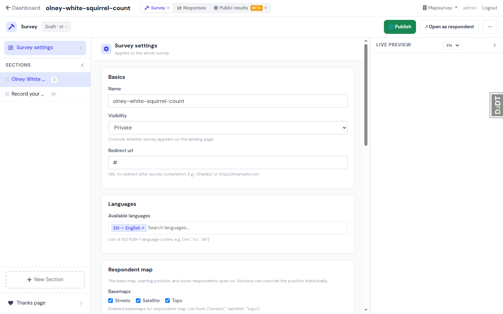
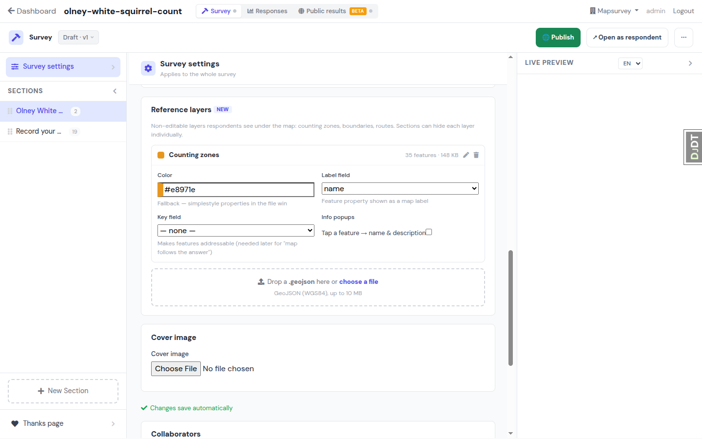
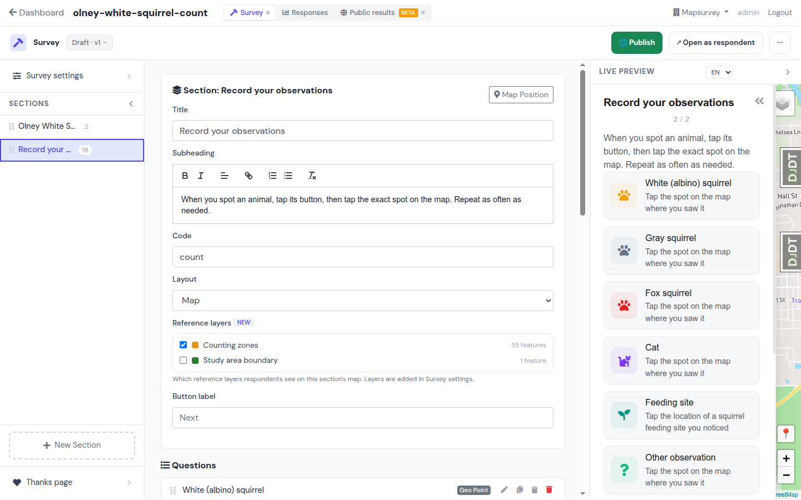
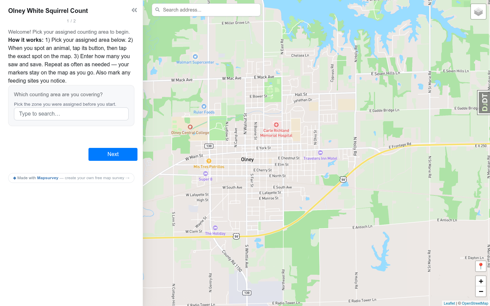
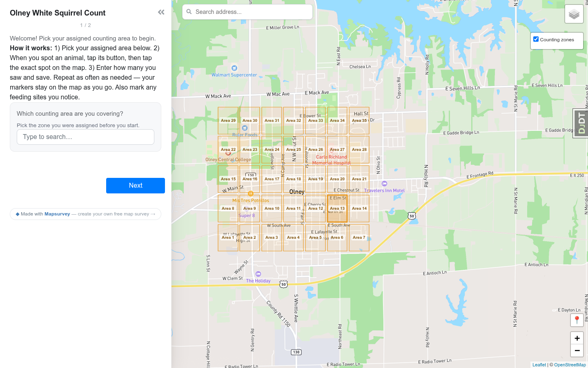
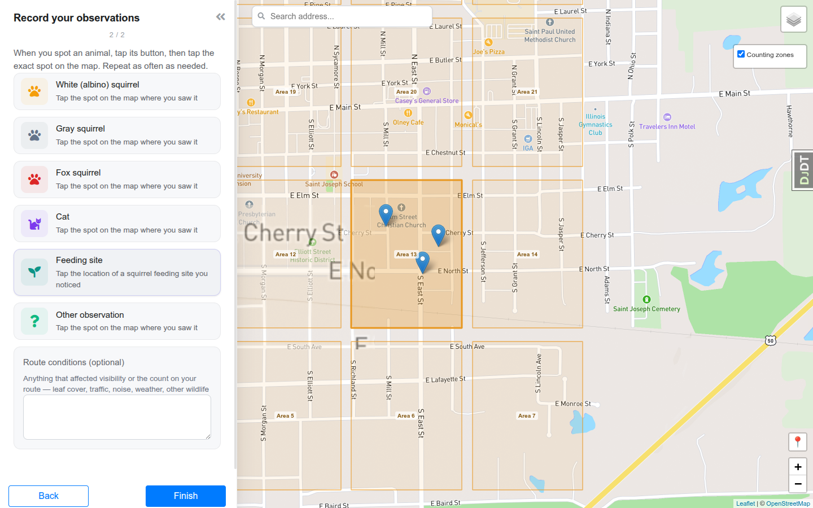
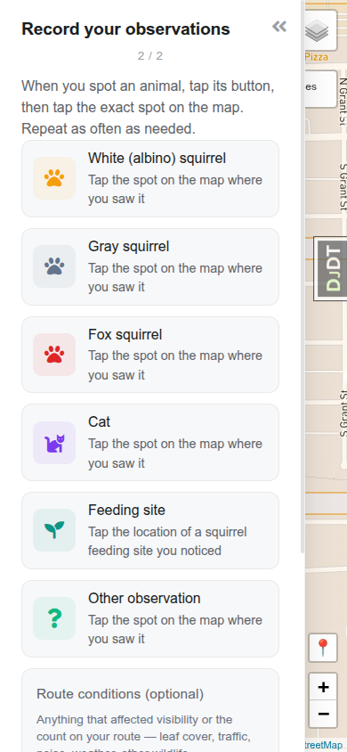

FD-1 · Reference overlay layers — User Journey
Скриншоты — живой dev-стенд с импортированным Olney-опросом. РЕАЛЬНЫЙ UI — существующий интерфейс без изменений; НОВОЕ — элементы фичи, вживлённые в реальную страницу.
Journey A — Создатель (Kelsie, City Clerk, без ГИС-навыков)
Цель: волонтёры должны видеть свои зоны подсчёта прямо на карте, а не на бумажке.
1Открывает настройки опроса РЕАЛЬНЫЙ UI
Страница Survey → «Survey settings» в левом рейле. Центр — карточки настроек (Basics, Languages, Respondent map…), справа Live Preview.
Где встаёт фича: новая карточка «Reference layers» — сразу после карточки «Respondent map», в той же автосейв-форме. Никаких новых вкладок и страниц.

Сегодняшняя панель Survey settings — карточка слоёв встанет ниже «Respondent map».
2Загружает GeoJSON и настраивает слой НОВОЕ
Перетаскивает zones.geojson в дроп-зону. Файл валидируется (WGS84, ≤10 MB), появляется карточка слоя: цвет (фолбэк — simplestyle из файла главнее), поле подписи, поле-ключ, тумблер инфо-попапов.
Поле-ключ — задел под FD-14 («карта следует за ответом»): маппинг фич на коды choice-вопроса. В FD-1 UI-связки нет, только сохранение.

Карточка «Reference layers», вживлённая в реальную панель настроек (после «Respondent map», перед «Cover image»). Автосейв «Changes save automatically» распространяется и на неё.
3Выбирает слои для секции НОВОЕ
Открывает секцию в левом рейле. В форме секции — чек-лист «Reference layers» между «Layout» и «Button label»: какие из слоёв опроса видны на карте этой секции. По умолчанию все включены; здесь intro показывает обе подложки, а секция наблюдений — только зоны.
Аналог в коде: тот же паттерн, что override basemap у секции — настройка уровня опроса, переопределяемая на секции. На form-секциях (без карты) блок не показывается.

Реальная форма секции «Record your observations»: чек-лист слоёв с цветом и числом фич; «Study area boundary» здесь выключен.
Journey B — Волонтёр (телефон/десктоп, без аккаунта)
Цель: найти свою зону, пройти маршрут, отметить животных.
4До фичи: пустая карта РЕАЛЬНЫЙ UI
Сегодня волонтёр видит просто карту города. Где его зона — надо смотреть в бумажную карту рядом (пункт, из-за которого Olney получил письменный отказ).

Секция 1/2 (intro): дропдаун зоны уже с поиском (choice-dropdown-display), но карта пуста.
5С фичей: зоны на карте НОВОЕ
Оверлей «Counting zones» рендерится под ответами: заливка цветом слоя, подписи из поля «name». Тумблер слоя — стандартный Leaflet-контрол справа сверху (сегодня там же живёт переключатель basemap). Клики по зонам «прозрачны» — тап всегда ставит точку ответа, зону выбрать/сдвинуть нельзя.

Intro-секция с оверлеем: 35 зон, подписи, контрол «Counting zones» с чекбоксом. Area 13 выделена — так будет выглядеть FD-14, в FD-1 все зоны ровные.
6Считает в своей зоне НОВОЕ
Перешёл к секции наблюдений (HTMX-своп панели) — карта и оверлей переживают навигацию (persistent map). Маркеры наблюдений ложатся поверх подложки; зона всё время в поле зрения.

Секция 2/2: кнопки видов слева (реальный multi-feature флоу), три отметки внутри Area 13 поверх оверлея.
7Мобильный флоу не меняется РЕАЛЬНЫЙ UI
На телефоне тот же легаси-флоу панель→crosshair (утверждённый владельцем): тап по виду скрывает панель и открывает карту — уже с оверлеем. Фича ничего не добавляет в панель, только слой на карте и тумблер в существующем контроле.

390×844: панель наблюдений; оверлей виден в просветах и на полной карте после тапа по виду.
За кадром (в design.md)
Решения, не видимые в UI:
- Отдача GeoJSON: отдельный GET-эндпоинт с кэшем/ETag, не инлайн в шаблон и не публичный S3-URL.
- Пер-секционная видимость: чек-лист слоёв в настройках секции (аналог override basemap) — в панели секции, не в карточке опроса.
- ZIP round-trip:
survey.json → layers[] + файлы layers/*.geojson; чтение через .open()/.read() (S3-совместимо).
- Кап 10 MB + валидация GeoJSON на входе; упрощение геометрии — вне MVP.